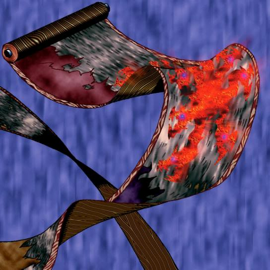

Yamatano Dragon Scroll

Description: "Transforms into Yamadron after surviving 3 turns in a face-up, defense position. However, the card must be voluntarily turned face-up."
STATS
ATK: 900
DEF: 300DECK COST
Deck Cost per Card: 17EFFECT IS IMPLEMENTED!
Fusion List (100 Possible Fusions)
- Yamatano Dragon Scroll + Ameba = Spike Seadra
- Yamatano Dragon Scroll + Ancient Jar = Stone D.
- Yamatano Dragon Scroll + Arlownay = B. Dragon Jungle King
- Yamatano Dragon Scroll + Armed Ninja = Dragon Statue
- Yamatano Dragon Scroll + Armored Zombie = Dragon Zombie
- Yamatano Dragon Scroll + Axe Raider = Sword Arm of Dragon
- Yamatano Dragon Scroll + Bat = Metal Dragon
- Yamatano Dragon Scroll + Blast Juggler = Metal Dragon
- Yamatano Dragon Scroll + Blocker = Metal Dragon
- Yamatano Dragon Scroll + Bolt Penguin = Thunder Dragon
- Yamatano Dragon Scroll + Bone Mouse = Dragon Zombie
- Yamatano Dragon Scroll + Brave Scizzar = Metal Dragon
- Yamatano Dragon Scroll + Celtic Guardian = Sword Arm of Dragon
- Yamatano Dragon Scroll + Change Slime = Spike Seadra
- Yamatano Dragon Scroll + Clown Zombie = Dragon Zombie
- Yamatano Dragon Scroll + Corroding Shark = Dragon Zombie
- Yamatano Dragon Scroll + Curtain of the Dark Ones = Blackland Fire Dragon
- Yamatano Dragon Scroll + Curtain of the Dark Ones = Blackland Fire Dragon
- Yamatano Dragon Scroll + Cyber-Stein = Metal Dragon
- Yamatano Dragon Scroll + Dark King of the Abyss = Blackland Fire Dragon
- Yamatano Dragon Scroll + Dark Plant = B. Dragon Jungle King
- Yamatano Dragon Scroll + Dark Rabbit = Koumori Dragon
- Yamatano Dragon Scroll + Darkworld Thorns = B. Dragon Jungle King
- Yamatano Dragon Scroll + Dharma Cannon = Metal Dragon
- Yamatano Dragon Scroll + Disk Magician = Metal Dragon
- Yamatano Dragon Scroll + Dragon Statue = Dragoness the Wicked Knight
- Yamatano Dragon Scroll + Dragon Zombie = Skelgon
- Yamatano Dragon Scroll + Electric Snake = Thunder Dragon
- Yamatano Dragon Scroll + Embryonic Beast = Koumori Dragon
- Yamatano Dragon Scroll + Fiend's Hand = Dragon Zombie
- Yamatano Dragon Scroll + Fungi of the Musk = Koumori Dragon
- Yamatano Dragon Scroll + Greenkappa = Dragon Statue
- Yamatano Dragon Scroll + Guardian of the Sea = Spike Seadra
- Yamatano Dragon Scroll + Haniwa = Stone D.
- Yamatano Dragon Scroll + Harpie Lady = Harpie's Pet Dragon
- Yamatano Dragon Scroll + Holograph = Metal Dragon
- Yamatano Dragon Scroll + Horn Imp = Koumori Dragon
- Yamatano Dragon Scroll + Hyo = Dragon Statue
- Yamatano Dragon Scroll + Ice Water = Spike Seadra
- Yamatano Dragon Scroll + Jellyfish = Spike Seadra
- Yamatano Dragon Scroll + Jinzo #7 = Metal Dragon
- Yamatano Dragon Scroll + Kagemusha of the Blue Flame = Dragon Statue
- Yamatano Dragon Scroll + Kaminari Attack = Twin-Headed Thunder Dragon
- Yamatano Dragon Scroll + Kaminarikozou = Thunder Dragon
- Yamatano Dragon Scroll + Kappa Avenger = Spike Seadra
- Yamatano Dragon Scroll + Karbonala Warrior = Sword Arm of Dragon
- Yamatano Dragon Scroll + Kuriboh = Koumori Dragon
- Yamatano Dragon Scroll + LaLa Li-oon = Thunder Dragon
- Yamatano Dragon Scroll + Laughing Flower = B. Dragon Jungle King
- Yamatano Dragon Scroll + Lesser Dragon = Koumori Dragon
- Yamatano Dragon Scroll + Lord of Zemia = Blackland Fire Dragon
- Yamatano Dragon Scroll + M-Warrior #1 = Dragon Statue
- Yamatano Dragon Scroll + M-Warrior #2 = Dragoness the Wicked Knight
- Yamatano Dragon Scroll + Magician of Faith = Blackland Fire Dragon
- Yamatano Dragon Scroll + Mammoth Graveyard = Koumori Dragon
- Yamatano Dragon Scroll + Man-Eating Plant = B. Dragon Jungle King
- Yamatano Dragon Scroll + Man Eater = B. Dragon Jungle King
- Yamatano Dragon Scroll + Masaki the Legendary Swordsman = Dragoness the Wicked Knight
- Yamatano Dragon Scroll + Masked Clown = Dragon Statue
- Yamatano Dragon Scroll + Mech Mole Zombie = Dragon Zombie
- Yamatano Dragon Scroll + Mechanical Snail = Metal Dragon
- Yamatano Dragon Scroll + Mega Thunderball = Thunder Dragon
- Yamatano Dragon Scroll + Megirus Light = Blackland Fire Dragon
- Yamatano Dragon Scroll + Minomushi Warrior = Stone D.
- Yamatano Dragon Scroll + Moon Envoy = Dragoness the Wicked Knight
- Yamatano Dragon Scroll + Monsturtle = Spike Seadra
- Yamatano Dragon Scroll + Morphing Jar = Stone D.
- Yamatano Dragon Scroll + Mushroom Man = B. Dragon Jungle King
- Yamatano Dragon Scroll + Mystery Hand = Koumori Dragon
- Yamatano Dragon Scroll + Mystic Lamp = Blackland Fire Dragon
- Yamatano Dragon Scroll + Petit Dragon = Blackland Fire Dragon
- Yamatano Dragon Scroll + Phantom Dewan = Blackland Fire Dragon
- Yamatano Dragon Scroll + Pot the Trick = Stone D.
- Yamatano Dragon Scroll + Princess of Tsurugi = Dragoness the Wicked Knight
- Yamatano Dragon Scroll + Protector of the Throne = Dragon Statue
- Yamatano Dragon Scroll + Pumpking the King of Ghosts = Curse of Dragon
- Yamatano Dragon Scroll + Rainbow Flower = B. Dragon Jungle King
- Yamatano Dragon Scroll + Rhaimundos of the Red Sword = D. Human
- Yamatano Dragon Scroll + Sangan = Koumori Dragon
- Yamatano Dragon Scroll + Sectarian of Secrets = Blackland Fire Dragon
- Yamatano Dragon Scroll + Shadow Specter = Dragon Zombie
- Yamatano Dragon Scroll + Skelgon = Curse of Dragon
- Yamatano Dragon Scroll + Star Boy = Spike Seadra
- Yamatano Dragon Scroll + Stone Armadiller = Stone D.
- Yamatano Dragon Scroll + Swordsman from a Foreign Land = Dragon Statue
- Yamatano Dragon Scroll + The Immortal of Thunder = Thunder Dragon
- Yamatano Dragon Scroll + The Judgement Hand = Garma Sword
- Yamatano Dragon Scroll + The Shadow Who Controls the Dark = Koumori Dragon
- Yamatano Dragon Scroll + The Unhappy Maiden = Blackland Fire Dragon
- Yamatano Dragon Scroll + Time Wizard = Thousand Dragon
- Yamatano Dragon Scroll + Tripwire Beast = Thunder Dragon
- Yamatano Dragon Scroll + Turtle Bird = Sea King Dragon
- Yamatano Dragon Scroll + Turtle Tiger = Spike Seadra
- Yamatano Dragon Scroll + Versago the Destroyer = Blackland Fire Dragon
- Yamatano Dragon Scroll + Wicked Dragon with the Ersatz Head = Koumori Dragon
- Yamatano Dragon Scroll + Wood Remains = Dragon Zombie
- Yamatano Dragon Scroll + Yashinoki = B. Dragon Jungle King
- Yamatano Dragon Scroll + Zarigun = Spike Seadra
- Yamatano Dragon Scroll + Zombie Warrior = Dragon Zombie
- Yamatano Dragon Scroll + The Judgement Hand = Sword Arm of Dragon